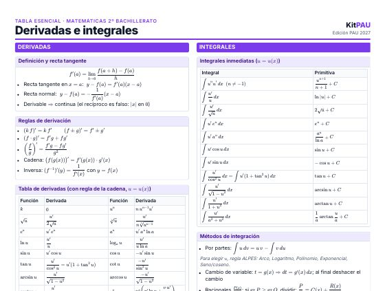
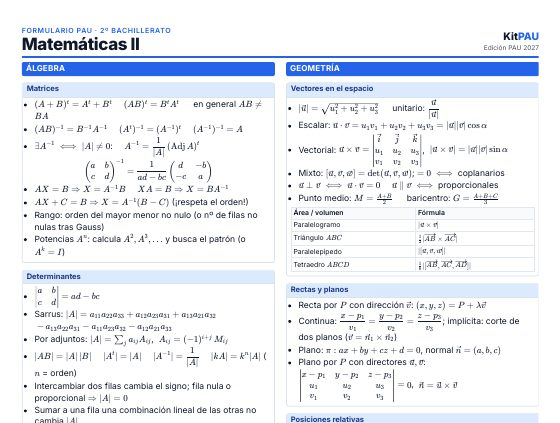
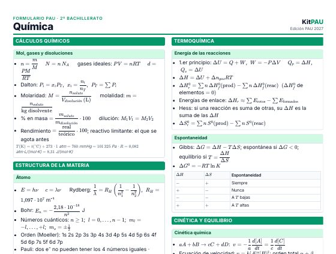
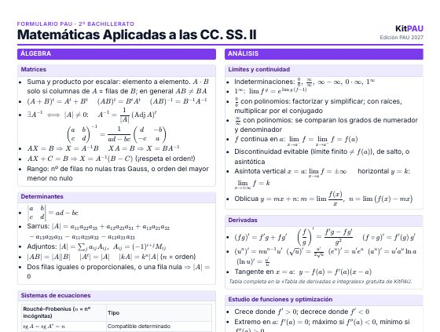
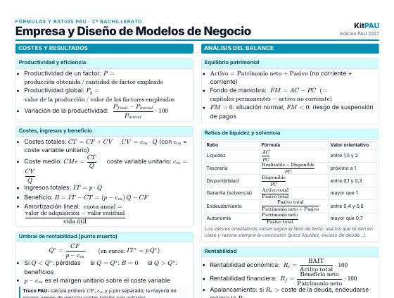

Tabla de derivadas e integrales
Derivadas con regla de la cadena, integrales inmediatas, métodos de integración y áreas. Una página A4 lista para imprimir.
Descargar PDFPAU 2027 · Selectividad · LOMLOE
Nota de acceso y de admisión con las ponderaciones de tu grado, con tres decimales, como en la papeleta. Gratis y sin registro.
Descargas gratis · PDF A4
Hechos para imprimir y repasar: todas las fórmulas que entran en el examen, ordenadas por bloques.

Derivadas con regla de la cadena, integrales inmediatas, métodos de integración y áreas. Una página A4 lista para imprimir.
Descargar PDF
Matrices, determinantes, sistemas, geometría en el espacio, análisis y probabilidad. Todo lo que entra en la PAU en dos páginas.
Descargar PDF
Gravitación, campo eléctrico y magnético, inducción, ondas, óptica, física moderna y constantes. Dos páginas A4.
Descargar PDF
Estequiometría, átomo y enlace, termoquímica, cinética, equilibrio, ácido-base, redox y orgánica. Dos páginas A4.
Descargar PDF
Formulario de Matemáticas Aplicadas a las Ciencias Sociales II para la PAU 2027: matrices, programación lineal, análisis, probabilidad e inferencia. PDF gratis en 2 páginas.
Descargar PDF
Fórmulas de Empresa y Diseño de Modelos de Negocio para la PAU 2027: costes, umbral de rentabilidad, VAN, TIR, ratios y PMM. PDF gratis en 2 páginas.
Descargar PDFOrganiza tu estudio
Hojas de cálculo del autor de KitPAU para Excel y Google Sheets.
Material para el examen
La calculadora debe ser científica y no programable. Revisa siempre la lista de modelos admitidos que publica tu universidad.
KitPAU es gratis y sin registro. Si quieres que siga creciendo, puedes apoyarlo.
Dudas frecuentes
Nota de acceso = 0,6 × nota media de Bachillerato + 0,4 × media de los exámenes de la fase de acceso. Para aprobar necesitas al menos un 4 de media en la fase de acceso y un 5 en la nota de acceso.
A la nota de acceso se le suman las dos mejores materias ponderadas: a × M1 + b × M2, donde a y b son las ponderaciones (entre 0,1 y 0,2) que fija cada universidad para tu grado. Solo cuentan materias con un 5 o más. El máximo es 14.
Sí. La materia específica obligatoria de tu modalidad cuenta en la fase de acceso y, si la apruebas y pondera para tu grado, también puede sumar en la fase de admisión.
Normalmente hasta cuatro, aunque solo suman las dos con mejor nota ponderada. Consulta el límite exacto en la normativa de tu comunidad.
La nota de acceso no caduca. Las materias de la fase de admisión sirven para los dos cursos académicos siguientes.